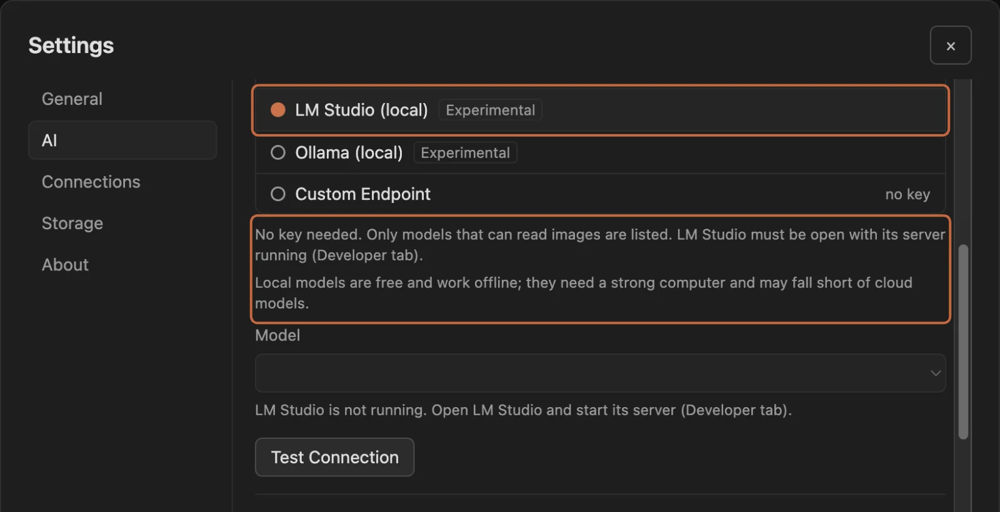

Local models
With LM Studio or Ollama, the AI model runs on your own computer: free, offline, and nothing leaves it.

LM Studio
- Start its serverOpen LM Studio and start its server in the Developer tab.
- Choose itIn Settings › AI › AI Model, pick LM Studio (local). No key is needed.
- Pick a modelOnly models that can read images are listed. A model that is not loaded yet is loaded when you choose it; the row shows Loaded with its context length.
Ollama
- Run itOllama must be running, with a model that reads images.
- Raise the contextIn Ollama's settings, set the context length to at least 64K: Ollama cuts a longer prompt without saying so.
- Choose itPick Ollama (local) and a model. Ollama loads it when a job starts.
Thinking
For a model that can think before it answers, Thinking turns that On or Off. Off is faster and uses less of the model's context.
What to expect
Local models are free and work offline; they need a strong computer and may fall short of cloud models. Both are marked Experimental: they have not passed Kilnframe's test set yet, and animation scenes may come out simpler.
A local model does the writing and judging jobs. The transcript is separate: it runs on this computer by itself (Cloud transcription is the other way).
If no models come, the tab says so: make sure LM Studio or Ollama is open, then press Test Connection.